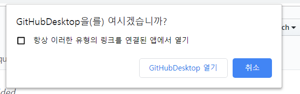
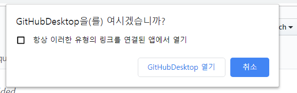
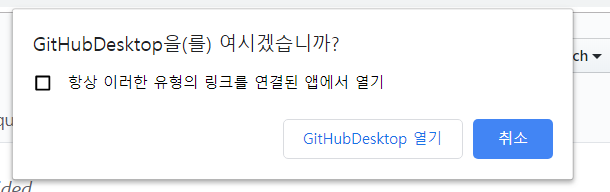

.png) 


깃허브(GitHub, 원래 이름: Logical Awesome LLC)는 분산 버전 관리 툴인 깃(Git)을 사용하는 프로젝트를 지원하는 웹호스팅 서비스이다.
GitHub는 영리적인 서비스와 오픈소스를 위한 무상 서비스를 모두 제공하며, 2009년의 사용자 조사에서 GitHub는 가장 인기있는 Git 호스팅 사이트로, 2011년의 조사에서는 가장 인기있는 오픈 소스 코드 저장소로 꼽혔다.
깃(Git)이 텍스트 명령어 입력 방식인데 반해, 깃허브는 화려한 그래픽 유저 인터페이스(GUI)를 제공한다. 깃허브는 페이스트빈(pastebin)과 유사한 서비스인 Gist와 위키를 각 저장소마다 운영하고 있으며, 깃 저장소를 통해 고칠 수 있다.
깃허브 회사는 2008년 톰 프레스턴워너(Tom Preston-Werner), 크리스 완스트래스(Chris Wanstrath), 피제이 하이엣(PJ Hyett)이 공동 설립했고, 앤드리슨 호로위츠(Andreessen Horowitz) 등에서 투자를 받았다.
2010년 1월부터 깃허브는 GitHub, Inc. 라는 이름으로 운영되고 있고, 본사는 미국 캘리포니아 주 샌프란시스코에 있다.
또한, 2018년 6월 4일, 마이크로소프트는 75억 달러에 깃허브를 인수할 것이라 발표하였다.
GitHub는 대부분 소스 코드의 작성을 위해 사용되지만, 아래의 포맷과 기능을 지원하기도 한다.
아직 Github에 회원가입이 되어있지 않은 경우 Github 홈페이지에 들어가서 Sign up for Github 버튼을 누른 다음 아래 순서와 같이 하면 된다.
그리고 상단의 sign in 항목을 클릭하고 사용자 이름과 비밀번호를 입력하면 로그인 할 수 있다.
Desktop Github 홈페이지에 들어간 다음 보라색 버튼(Download for Windows (64bit))을 클릭한 뒤 .exe 파일을 실행해서 설치하면 된다.
Github를 사용해서 코딩을 하기 전에 저장소를 만들어야 한다. 저장소가 없으면 Repositories 항목 상단의 'New'라고 써져 있는 버튼을 눌러서 저장소를 생성한다.
우선 여기서 생성할 저장소의 이름을 입력하고, 그 다음 자신이 코딩한 자료들을 다른 사람과 공유할지(Public), 혼자만 볼 건지(Private) 선택한 다음 하단의 create repository 버튼을 클릭해서 저장소 생성을 완료한다.
저장소를 생성한 후에 Github를 이용해서 코딩을 할 수 있는데, Github 사이트 내에서 파일을 새로 만들수도 있고(Create new file 버튼 클릭), 현재 컴퓨터에 존재하는 HTML 등의 파일을 업로드 할 수도 있다. (Upload file 버튼 클릭, 파일을 선택한 후에 Commit changes 버튼을 클릭하기) 업로드할 파일을 모두 정했으면 Clone or Download 버튼을 클릭하면 된다.

Clone or Download버튼을 클릭 했을 때 Clone with HTTPS라는 타이틀을 가진 박스가 열리는데 이떄 하단에 있는 Open in Desktop 버튼을 클릭한 뒤 팝업창이 뜨면 'GitHubDesktop 열기' 버튼을 클릭한다.
Github Desktop 창이 열린 뒤에는 연결을 원하는 폴더를 찾아 선택하면 해당 폴더에 연결이 되며,
해당 repository가 연결된 것은 왼쪽 부분의 Current Repository 항목에서 확인할 수 있다.
만약 폴더에 연결하는데 실패한 경우에는 가운데의 Clone Again 버튼을 눌러 다시 시도하거나 우측의 Remove 버튼을 눌러서 삭제하면 된다.
Github계정 로그인 정보(아이디/패스워드)와 Github내에서 표시될 정보(원하는 이름/연락될 메일 등의 계정)를 따라서 입력하면 Github Desktop이 자동으로 실행된다.
실행 후 클론 화면을 보면 위과 같이 표시되어 있는데, 즉 사진 왼쪽 상단의 책 표시는 받아온 장소가 공개된 레포지토리라는 사실을, Change에서 0이라고 써 있는 것은 파일을 받아서 바뀐 점이 없다는 것을 말합니다. 여기서 원 저작자가 수정한 내용은 오른쪽의 History를 확인하면 내역을 볼 수 있다.
이제 새로운 내역이 있는지 확인을 위해 Pull을 해보면, 이제 컴퓨터 안에 저장소가 위치할 공간이 생겼기 때문에 Repository에서 Pull을 선택하면 자동으로 Github의 저장 내역과 컴퓨터 안의 내역을 비교해서 새로운 내역을 새롭게 갱신한다.
이미 깃허브에서 저장소를 만들어 놓은 상태라면 Git Clone 과정을 반복하면 됩니다. 만약 새 깃허브 저장소를 만들고 싶다면 다음과 같이 File -> New Repository 한 후, Name(저장소 이름), Description(설명), Path(어느 디렉토리와 연동해야 하는지)를 설정하면 된다. (README같이 안내 페이지를 따로 만들건지 설정만 해주면 된다.).
이렇게 수행하고 나면 내 컴퓨터 저장소에 간략한 파일 저장소가 만들어지고, Github에 내 파일을 올리고 싶을 때 Publish repository 버튼을 클릭하면 Github와 저장소가 연동이 된다.
https://ko.wikipedia.org/wiki/%EA%B9%83%ED%97%88%EB%B8%8C (위키백과)
https://ko.wikipedia.org/wiki/%EA%B9%83%ED%97%88%EB%B8%8C (위키백과)
https://poppy-leni.tistory.com/entry/GitHub-DeskTop-%EC%84%A4%EC%B9%98-%EB%B0%8F-%EA%B8%B0%EB%B3%B8-%EC%82%AC%EC%9A%A9%EB%B2%95 (poppy-leni.tistory (익스플로러에서는 실행이 안될 수 있음.))